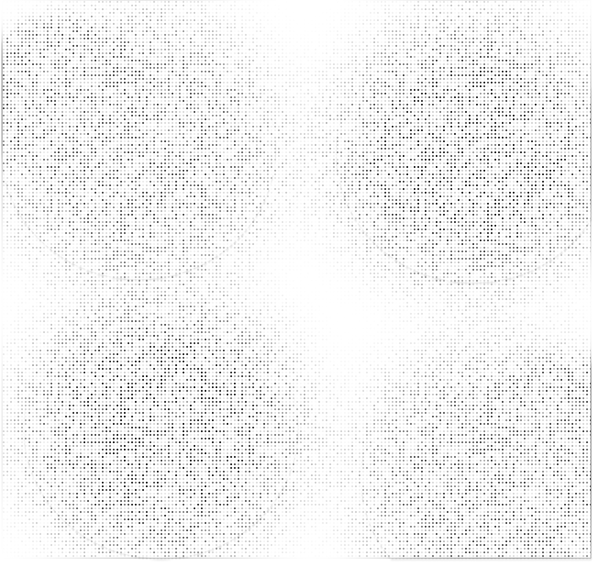

Ω
BASED
In
PH
WITH A BS IN ECE AND NEWLY EARNED LICENSES, THIS CURIOUS MIND IS READY TO STEP INTO THE BOUNDLESS POSSIBILITIES OF TECHNOLOGY.
About Me
HI THERE, I'M IAN
Graduated from the Polytechnic University of the Philippines with a Bachelor of Science in Electronics and Communications Engineering, and recently passed the ECE and ECT licensure examinations in April.
I'm eager to explore the dynamic and ever-evolving tech landscape.
Currently diving into software development, cloud computing, AI/ML, and data engineering driven by curiosity and a passion to create something wonderful.

TECH STACK
My tech stack reflects a blend of hardware innovation,
software development, and data handling. I work with Arduino and
Raspberry Pi, using C for embedded systems and sensor-based projects.
On the software side, I primarily use Python to build scripts, automate
tasks, and interact with RESTful APIs, including integrations with the OpenAI
API for AI-driven applications. I’ve strengthened my data skills through DataCamp,
where I learned SQL, data cleaning, and basic data analysis techniques. I manage all
my code using Git and host my projects on GitHub for version control and collaboration.
I’m also comfortable navigating and working in the command line interface.

VERY FLEXIBLE WITH COMMUNICATIONS & LOCATIONS
Based in the Philippines, I am open to hybrid and fully remote opportunities. I value clear, responsive communication and adapt easily to different time zones and team dynamics. Whether it's async updates or live collaboration, I prioritize keeping everyone aligned and connected. 
Vision
My mission is to continuously grow,
both professionally and personally by embracing
new challenges and opportunities, learning new technologies,
and staying curious. I aim to become the best version of
myself while making a positive impact on people's lives.